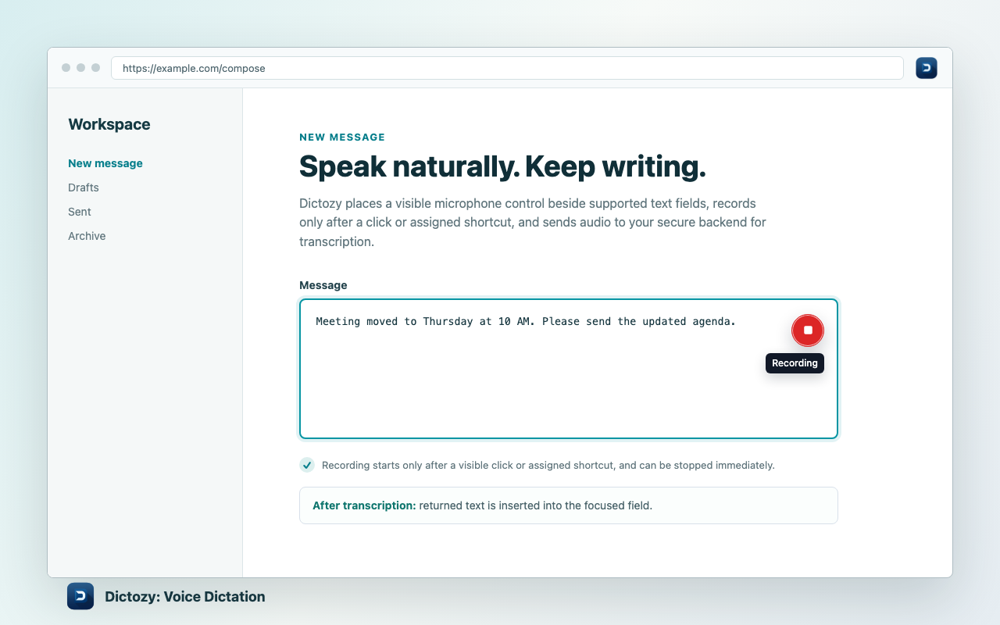
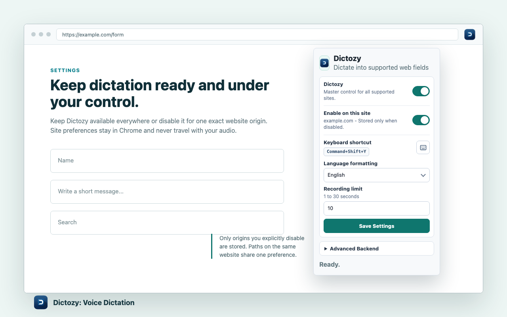

Voice typing in Chrome
Dictozy: Voice Dictation for Chrome
Speak short messages, notes, searches, and form entries directly into supported web fields. Dictozy records only after your click or assigned shortcut, then returns the transcript where you were writing.
How it works
Speech to text without leaving the field.
Focus a supported input, start Dictozy, and speak a short phrase. The extension sends the clip to its FastAPI backend for transcription and inserts the returned plain text at the intended caret or selection.
Use a supported input, textarea, contenteditable field, or editable ARIA textbox.
Use the visible microphone button or assigned shortcut and follow Chrome's microphone permission flow.
Stop recording and let Dictozy insert the returned transcript where you were writing.

Everyday controls
Choose where and how Dictozy works.
Keep Dictozy available globally or disable it for one exact website. The popup also lets you choose language formatting, view the assigned shortcut, adjust the recording limit, cancel active work, and reset site preferences without changing unrelated settings.
Privacy and security
Clear recording behavior and a narrow data path.
Audio is sent over HTTPS to Dictozy's backend for transcription. The backend calls xAI Speech-to-Text; the browser extension never calls xAI directly and never contains the provider API key.
- Recording starts only after the microphone button is clicked or the assigned shortcut is pressed.
- Password, payment, and other sensitive or unsupported fields are ignored.
- The extension does not collect browsing history, existing field contents, or surrounding page content.
- Only exact origins you explicitly disable are stored locally; site preferences are not sent to the backend.
- The backend application does not intentionally persist raw audio or transcripts.
Compatibility
Made for short, supported Chrome fields.
Works with
- Text, search, email, URL, and telephone inputs.
- Textareas and supported contenteditable fields.
- ARIA textboxes that are actually editable.
- Fields added dynamically after a page loads.
Designed boundaries
- Chrome and HTTPS webpages, plus local development pages.
- Short dictation clips rather than long-form recording.
- An internet connection and an available transcription backend.
- Language formatting hints, not guaranteed recognition improvements.
Get started
Add voice dictation to Chrome.
Install the published extension, focus a supported field, and start with the visible microphone control.